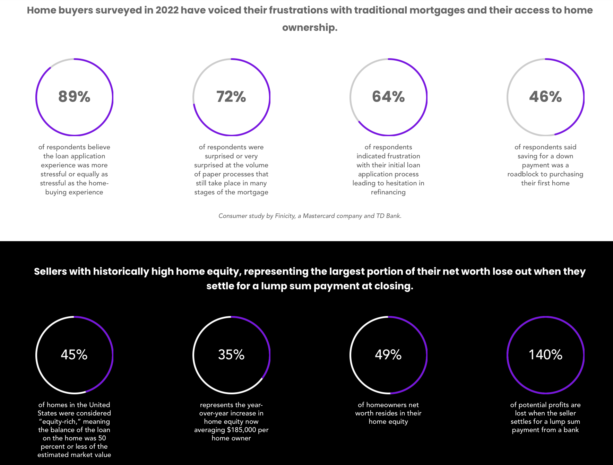

Market Research
A few key conclusions that could be drawn from the statistics on home buyers' frustrations with traditional mortgages include:
- The mortgage application and approval process needs to be updated and modernized. With so many buyers reporting high stress and frustrations with paper-heavy manual processes, there is a clear need for digitalization and streamlining. This could improve buyer experiences and satisfaction.
- Down payments remain a major barrier to first-time homeownership. Nearly half of buyers have trouble saving enough for a down payment. Expanding accessibility to low down payment mortgage programs could help more people overcome this hurdle.
- Significant home equity gains are being left on the table. With record levels of tappable home equity, the data shows sellers are missing out on 140% more potential profits when taking lump sum payments. Allowing equity harvesting could help them maximize this asset.
- Home equity represents a large portion of net worth for many owners. Yet this wealth is not being fully leveraged. Providing more accessible avenues to tap into it could greatly benefit homeowners financial planning and stability.
Overall, modernized lending processes, product expansion to assist first-time buyers, and equity tapping opportunities all represent ways the current problems highlighted in the data could be addressed with updated mortgage policies and offerings. The data makes a case for needed innovation.